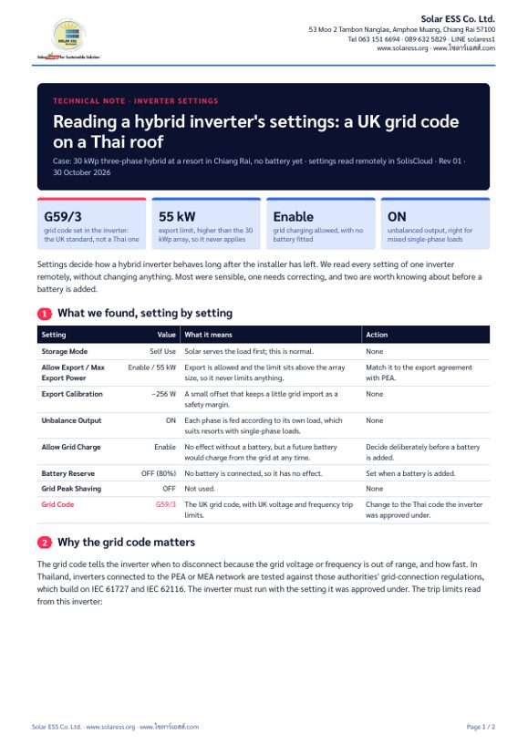

![Solar ESS, Solar Energy for Sustainable Solution]()

Reading a hybrid inverter's settings: a UK grid code on a Thai roof
We read every setting of a 30 kWp three-phase hybrid inverter at a resort in Chiang Rai, remotely and without changing anything. Most were sensible; the grid code was set to the UK standard G59/3.
- Each setting, what it means and what to do
- The grid-code trip limits read from the inverter, and why the Thai code matters
- A checklist of 8 settings to read on every hybrid installation